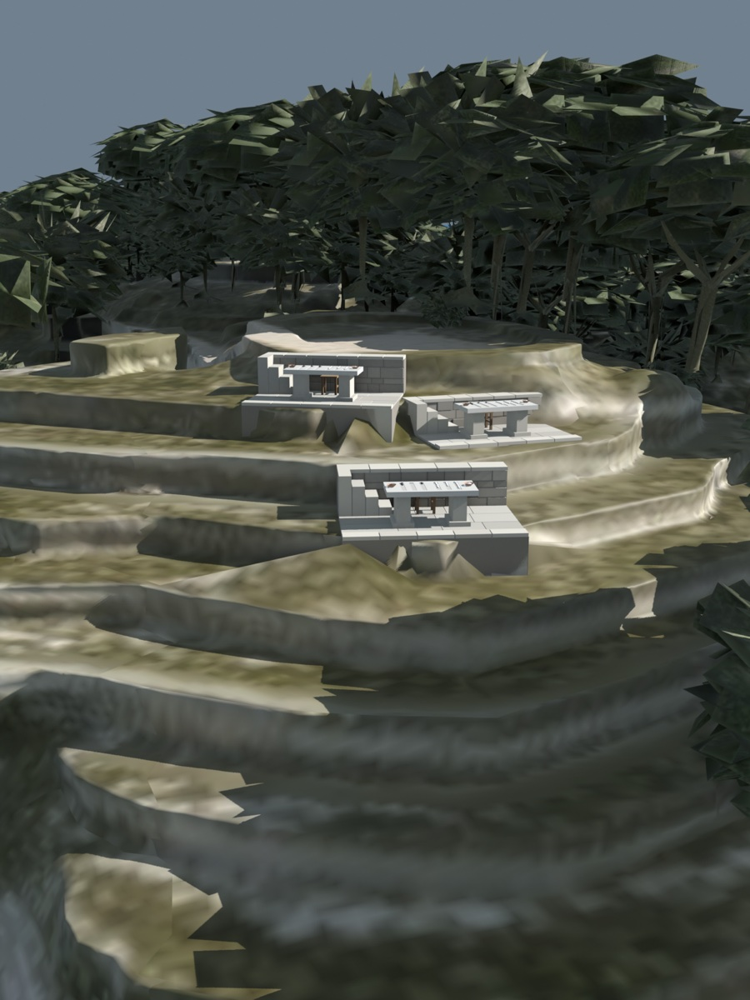
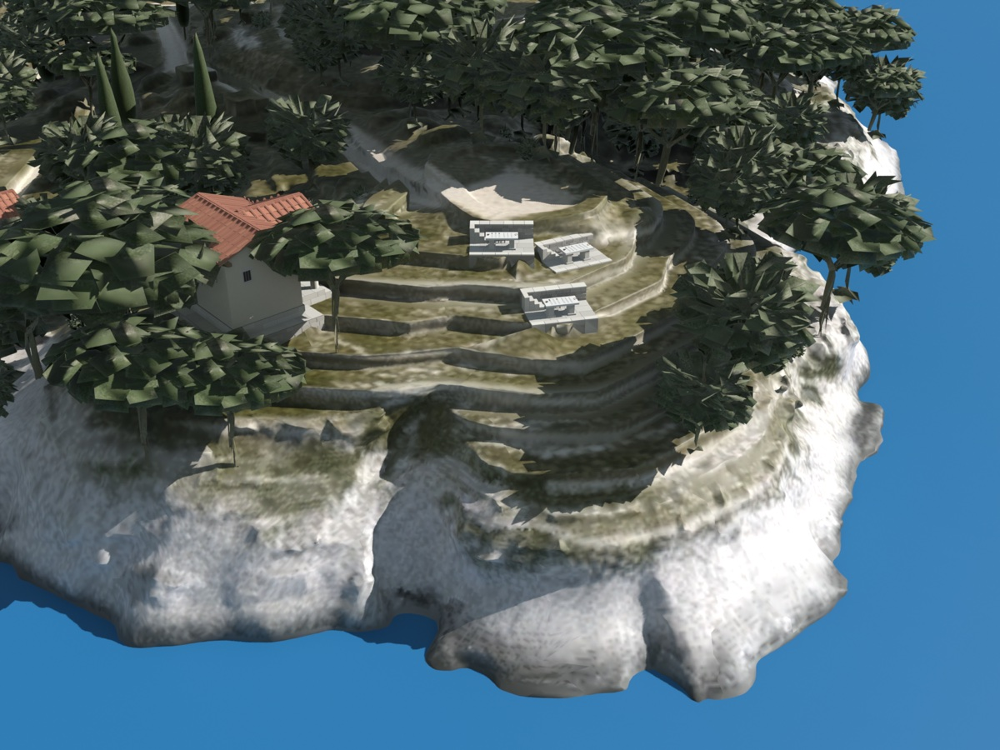
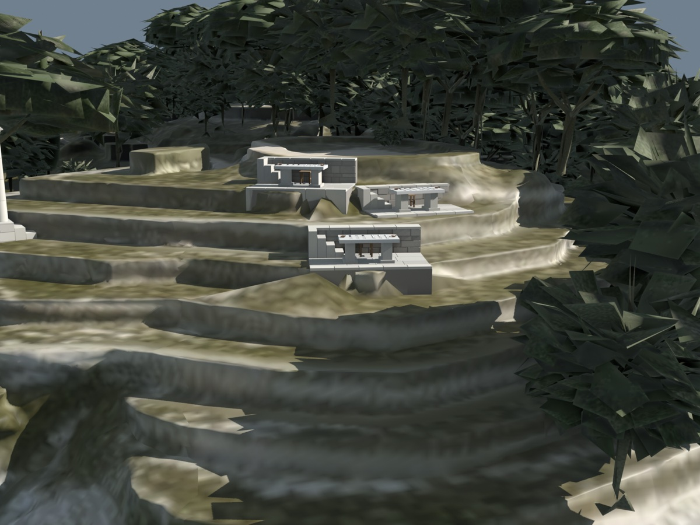
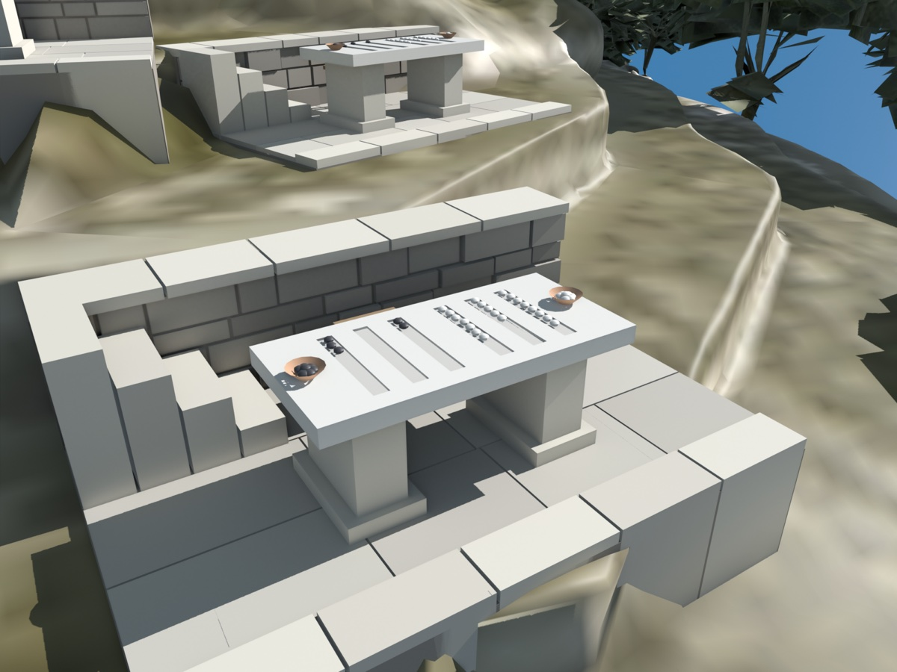
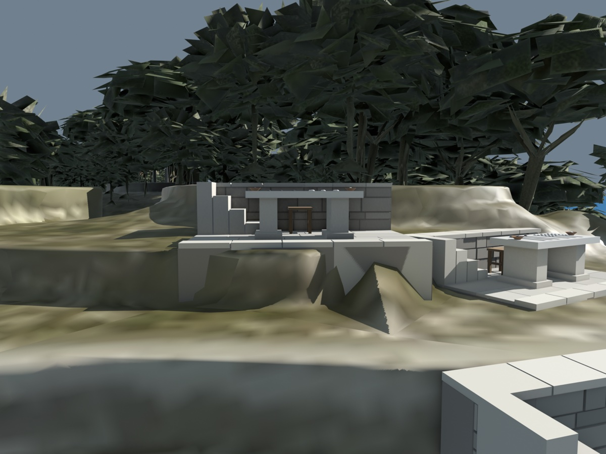

Can some changes be combined in any order, any number of times, and still come out the same everywhere, so that they never clash and no one ever needs to coordinate?
We find out by exploring how Greek scholars far apart kept a shared count that always came out the same, without ever meeting to settle it.
After Marc Shapiro, Nuno Preguiça, Carlos Baquero and Marek Zawirski, Conflict-free Replicated Data Types, 2011 · the same authors, A Comprehensive Study of Convergent and Commutative Replicated Data Types, 2011

Several replicas hold the same data. Each accepts updates on its own, with no coordination, and the replicas exchange what they have afterwards.
This edition tells it with pebbles on stone tables, one table on each terrace of a hillside.
Both replicas increment at once, then merge. Try each way of merging, more than once.

At the island's southern tip, as far from the Chamber and the Tholos as Paxos goes, a hillside is cut into terraces, and on each a scribe keeps a table that counts the copies made of each work.*
The table counts how many copies of each work have been made on the coast, in pebbles set in grooves on a stone slab. The scribe of the first terrace is Shapirios.
Start with one pile for each work. Two terraces each add a pebble for the same work at the same time, each unaware of the other. Each table shows one copy made, and two were made.
When the tables meet, keeping the larger pile keeps one, and a copy is lost. Adding the two piles gives two, which is right this once. At the next meeting the same piles are added again, and the count rises for ever on copies that were made once.
The terraces could take turns, but then they wait for one another, and a stopped courier stops them all. What is wanted is narrower than agreement: add at once, show the same count for the same news in whatever order it came, and never take anything back.

The trouble was that two scribes added to the same pile. So each table is kept with a column for every terrace, and a scribe adds white pebbles only to the column of the scribe's own terrace.
A column then has one writer, and it only goes up. When two scribes each add a pebble, they add to different columns, and neither can overwrite or double the other. On any table, a column is the number of copies its terrace has made, as far as that table has heard. The count of copies made is the sum of the columns.
A terrace learns another's pile by being sent its table. Its own table has its own column up to date and the others as old as the news that has reached it. The table that arrives is out of date in a different way. Which pile in each column is right?
A terrace keeps the larger pile in each column. A column only ever grows, so of two piles in the same column the larger is the later, and holds everything the smaller holds and more.
Three things are then true of merging, and the whole idea rests on them. It does not matter which table is merged into which. It does not matter how several tables are grouped. And merging the same table twice changes nothing. A table can be lost, delayed, copied, or arrive out of turn, and the terrace that takes it in ends at the same place.
Each table has a column for every terrace. The shaded column is the one its own scribe may add to.
Adding them counts the shared part twice, and again at every later meeting. Taking the larger in each column counts each pile once, because it never combines two piles of the same column.
None of this needs the terraces to agree on anything. Terraces that can still pass tables to one another come to show the same count among themselves, even if the roads to the rest are cut, and when the roads open the rest join them. Any number of terraces can fall silent without stopping the others.
The payload is a vector P of n naturals, one entry per replica. The update increment at replica g sets P[g] := P[g] + 1; the query value returns Σi P[i]; the merge of X and Y is the entry-by-entry maximum. A CvRDT is an object whose states form a semilattice under an order ≤, whose merge ⊔ is the least upper bound, and whose updates never decrease the state. Claim. This counter is a CvRDT, and any two replicas that keep exchanging states converge.
A terrace can send its whole table, or it can send a short notice of each change: one more copy at terrace 1. The first is the table way and the second the notice way.
Both can keep every terrace's count the same. They ask very different things of the couriers.
Terrace 2 has not heard yet.
A table may arrive twice, late, or before an older one, and it makes no difference. A courier may be lost and nobody need know, provided some later table gets through. The cost is size: every table, to carry a handful of changes.
A notice taken in twice counts twice, and a notice lost leaves a pile short for good. Notices that depend on one another must arrive in that order: a strike must not arrive before the addition it strikes. That needs no vote and no leader, but it is a promise about the roads.
A terrace can send a whole table as a notice, take this table in. And a terrace can keep in its table every notice it has received and every one it has acted on, so that merging tables merges the notices. The paper proves it both ways.
SEC is strong eventual consistency. A state-based object, a CvRDT, is (S, ≤, s0, q, u, m): states, their order, the initial state, query, update and merge. An operation-based object, a CmRDT, is (S, s0, q, t, u, P): states, initial state, query, prepare-update, effect-update and delivery precondition. Claim. Each can emulate the other.
So a count that can be kept one way can be kept the other, and the choice is about the roads and the cost.

Taking the larger pile works because a pile never shrinks. A scribe who took a pebble out would be undone at the next meeting, by any table that still had the larger pile.
So the tables keep a second kind of pebble. White pebbles stand for copies made, and black for copies lost. Each terrace has a white set of columns and a black set, and a scribe adds only to the scribe's own column of each.
Each set merges by the larger pile in every column. The count of copies there are is the white pebbles less the black. Both sets only grow, so both merge safely, and their difference can fall.
The one copy was made at terrace 1. Both tables show it.
A stricter rule that each scribe can keep alone does work: mark no more copies lost than were made at one's own terrace. But a terrace whose library never made a copy could then mark none lost, however many it held. The other cures are to agree before marking a copy lost, which is to wait, or to share out beforehand how many losses each terrace may mark, which is agreeing in advance. The paper's verdict is that there is no cheap way.
A table of corrections holds a work's text with the tally of the edition that wrote it. Two libraries correct the same work, each unaware of the other, and the terraces must end with one result.
Neither rule below is forced by the idea. Both merge in any order and any number of times, and both leave every terrace with the same result.
The edition with the larger tally wins and the other is thrown away.* It is the larger pile again, applied to a number that only rises. The loser is lost for good. Nothing says the later edition was the better, only that it is later.
An edition written by someone who had seen another must carry a larger tally than the one it answers, or the rule would throw away the answer and keep the question.
Each edition is kept with a note of which editions it was written after, and is dropped only when some kept edition was written after it. Two corrections written in ignorance of each other are both kept, and the reader chooses.
The paper lists several such choices for one kind of record, each a different meaning for the same clash, and all of them settle. What the idea guarantees is that every terrace settles the same way. It does not say the way is the right one.
The terraces also keep a list of the titles of the works made on the coast. The simplest list is only ever added to. Two such lists merge by joining their titles, and joining is the same either way round, in any grouping, and twice over. That is the catalogue of titles.
Striking a title off is harder. Three ways follow, and each gives a different meaning to the same clash.
Keep a second list, the struck-off list. A title is on the catalogue if it is on the first list and not on the second. Both lists only grow, so both merge. A title once struck can never come back: a strike beats an add, for good.
Each time a title is written, it gets a mark that nobody else will ever use. A title is on the catalogue if any mark of it is. To strike a title, a scribe strikes all the marks in sight, and only those.
Each title can carry a tally, so that the later of its last add and last strike wins. Or a count, up with adds and down with strikes, which settles but behaves oddly: a title struck twice needs two adds to return.
Each library sees only its own list until the two exchange.
If one library strikes a title while another writes it again, the new writing carries a mark the striker never saw, so the title stays. A title added after a strike is on the catalogue. The paper names this list after what it does: a strike removes what it has observed.
An ordinary list is kept with every act in one order that every terrace shares. Such a list is simple to reason about, and it asks the terraces to settle that order between them, which means everyone waits.
The lists of titles can give a result that no single order could. Library 1 adds title E and then strikes title F. At the same time, Library 2 adds title F and then strikes title E. A terrace takes in both.
If the terraces did settle one order they would all end with the same list, so they would agree too. But settling one order needs agreement, and agreement cannot be had if many terraces may fall silent. Here a terrace is always free to read and to add, whatever the roads, with all but one of the terraces silent.
SEC is strong eventual consistency: replicas that have delivered the same updates have the same state. Sequential consistency asks that the result be that of all updates executed in some single order. Take a Set CRDT with add-wins semantics: after add(e) ∥ remove(e), where ∥ means concurrent, e ∈ S. Claim. Neither property implies the other.
The terraces get a count and a catalogue that can always be read and written, that never wait on a courier, and that settle by merging alone. Five things they do not get.

No. A count that must never go below zero, or a catalogue that must never hold two titles together, is a rule about the whole coast, and no terrace can see the whole coast from its own table. Keeping such a rule means agreeing, beforehand or at times.
No. Every terrace settles the same way, and the way is chosen by whoever designs the list: the strike may beat the add or the add the strike, the later correction may win or both be kept. Any of them may be reasonable for some use.
Not by itself. The struck-off list only grows, every mark stays until it is struck, and there is a column for every terrace. To throw old notices away a terrace must know every other has taken them in, which it can learn only while no terrace is silent.
That no scribe lies: one who adds to another's column, or reuses someone's mark, can break it. That the terraces are known and the piles never outgrow their grooves. That on the notice way each notice arrives exactly once, in order of dependence. That tallies follow the order of events.
No. The paper also gives designs for cross-references between works and for ordered sequences, which are left to the paper. What it shows is the shape of the idea: the merge must take the least that holds both, and changes must only go up, or else they must not mind their order.
Every terrace is a replica, and its table is the replica's state. Hover or tap to see who is who.
Replicas that only ever move their state upward, and merge by taking the least state that holds both, converge without coordinating.
A rule that spans all the replicas, such as a count that never goes below zero, still needs agreement.
Setting The Scholars' Coast
Leads to What You Can Promise Alone · Knowing When to Wait
Outside this series Wuu & Bernstein 1984, Efficient solutions to the replicated log and dictionary problems · Thomas 1979, A majority consensus approach to concurrency control · Preguiça et al. 2009, A commutative replicated data type for cooperative editing
Marc Shapiro, Nuno Preguiça, Carlos Baquero and Marek Zawirski, Conflict-free Replicated Data Types. Stabilization, Safety, and Security of Distributed Systems (SSS), 2011. — Strong eventual consistency, the state-based and operation-based sufficient conditions, their equivalence, the incomparability with sequential consistency, counters, sets and graphs.
Marc Shapiro, Nuno Preguiça, Carlos Baquero and Marek Zawirski, A Comprehensive Study of Convergent and Commutative Replicated Data Types. INRIA Research Report RR-7506, January 2011. — The portfolio: counters, registers, sets, graphs, sequences, with specifications and proofs.
The ideas, plainly.
Shapiro and his co-authors ask when replicas of some data can accept changes without ever talking to one another first, and still end the same. Their answer, strong eventual consistency, asks only that replicas that have received the same updates are in the same state. They give two sufficient conditions. In the state-based form the states are ordered so that each update moves a state upward and merging two states is their least upper bound; then merging commutes, groups freely and may be repeated. In the operation-based form every pair of concurrent operations commutes and operations are delivered once each, in causal order. Each form can imitate the other.
A counter that only counts up is a vector with one entry per replica and a per-entry maximum for merge; a counter that also counts down is two of them. A register can keep the later write or keep both. A set that only grows is a union; a set that also loses elements can let removal win, or let adds win by tagging every add and having a removal take away only the tags it has seen. These all converge, and each means something different by a clash.
What the approach does not do is keep a rule that spans all the replicas, such as a count that never goes below zero; for that, replicas must agree. It does not decide which meaning of a clash is right, and it is not the same as keeping one order of all the updates: it permits results no single order would give, and it is available where one order would need agreement.
Shapirios stands for Marc Shapiro, the first author. The papers have four authors, Marc Shapiro, Nuno Preguiça, Carlos Baquero and Marek Zawirski, and all are credited here; only Shapirios is named, and the scribes and libraries are told apart by what they do.
| the far terraces, each with a scribe and a table | Replicas, one at each process. Short paper §2; report §2. |
| a table of pebbles for each work | The payload of a replicated object. Short paper §2.1. |
| terraces that have heard the same news show the same count | Strong eventual consistency (SEC): strong convergence. Short paper §2.2. |
| no waiting, no vote, nothing undone | No synchronisation, no consensus, no roll-back; up to n − 1 crashes tolerated. Short paper §1, §3.1. |
| a column for each terrace, written only by its own scribe | A vector of integers with one entry per replica. Short paper §4.1; report spec. 6. |
| taking the larger pile in each column | Merge as least upper bound: the per-entry maximum. Short paper §2.3, §4.1. |
| any order, any grouping, as often as you like | The join is commutative, associative and idempotent. Short paper §2.3. |
| adding the totals counts a pile twice | Merge by addition is not idempotent, so not a CvRDT. Report §3.1.2. |
| the table way | State-based replication: a CvRDT. Short paper §2.3, Theorem 1. |
| the notice way; exactly once, in order of dependence | Op-based replication: a CmRDT, with reliable causal broadcast. Short paper §2.4, Theorem 2. |
| each way is a disguise of the other | CvRDTs and CmRDTs emulate each other. Short paper §3.2, Theorems 3 and 4. |
| white pebbles and black; the count is white less black | PN-Counter: two G-Counters. Report §3.1.3, spec. 7. |
| two scribes each marking the last copy lost | The non-negative counter: a global invariant cannot be kept without synchronisation. Report §3.1.4. |
| a terrace may not mark more lost than it made | A local invariant implying the global one, P[g] − N[g] ≥ 0; escrow. Report §3.1.4. |
| the later edition wins by its tally | LWW-Register. Report §3.2.1, specs. 8, 9. |
| keeping both corrections, each with what it was written after | MV-Register, with version vectors. Report §3.2.2, spec. 10. |
| the catalogue of titles, only added to | G-Set: union. Report §3.3.1, spec. 11. |
| the struck-off list: once struck, never restored | 2P-Set, with a tombstone set; remove only what is present. Report §3.3.2, spec. 12. |
| each title with its own mark; a strike removes the marks it has seen | OR-Set (observed-remove, add wins). Report §3.3.5, spec. 15. |
| a title carrying a tally; a title carrying a count | LWW-element-Set; PN-Set. Report §3.3.3, §3.3.4. |
| two libraries each adding one title and striking the other's, ending with both | SEC is incomparable with sequential consistency. Short paper §3.3. |
| throwing away old notices needs every terrace heard from | Distributed garbage collection of the log or tombstones (Wuu and Bernstein). Short paper §4.2. |
| a catalogue of cross-references between works, left to the paper | Directed graph CRDTs. Short paper §5; report §3.4. |